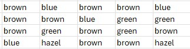
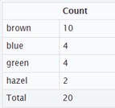
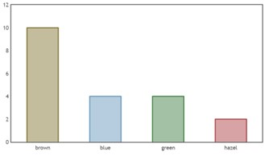
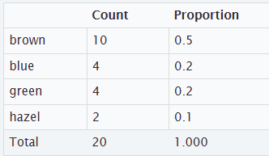
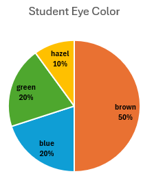
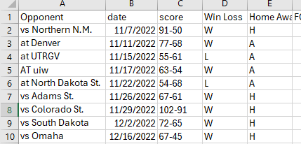
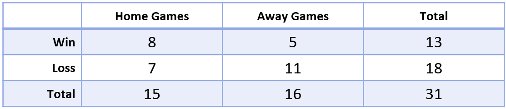
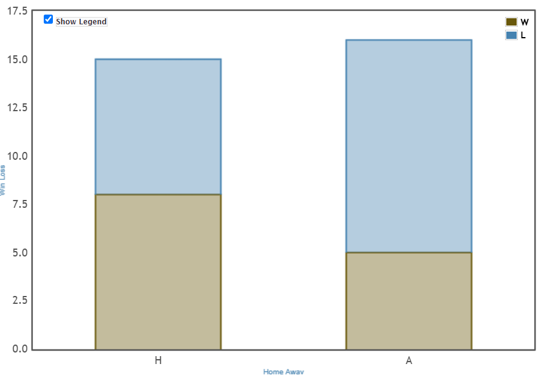
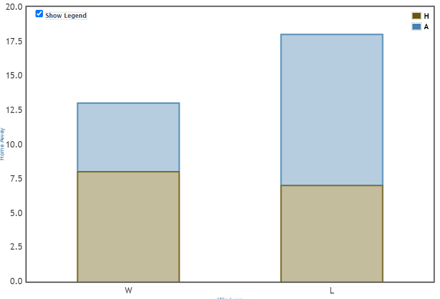

Graph categorical data with bar graph or pie graph.
Accurately describe the data with proportions.
Once a researcher has gathered the data for a particular variable, they need a way to summarize the data in a meaningful way. Generally, the first step is organizing the data and then presenting the data in graphs and charts. A convenient method is organizing the data in a frequency distribution. With categorical data, the frequency represents the number of times a particular category occurs from the raw data. This is organized in a frequency table summarizing each category with its frequency. This works best with nominal and ordinal level data.
Subsection2.1.1Graphing One Categorical Variable
On the first day of class, students respond to the Class Survey by identifying their eye color. In the sample of 20 students below, construct a frequency table to summarize the data.

Figure2.1.1.Image of Raw Eye Color Data
The data is organized into 4 distinct categories. With this smaller data set we can count how many have brown eyes, how many have blue eyes, then green and hazel. With a larger data set we will use technology to help us find the frequency. From this sample there are 10 with brown eyes, 4 have blue eyes, 4 have green eyes, and 2 have hazel eyes. If we add the counts together, we get our sample of 20 students.

Figure2.1.2.Image of Eye Frequency
Once we have the tallies, we can graph the data as a bar graph or bar chart. We typically list the categories along the horizontal x-axis and the frequencies vertically along the y-axis, as shown below. The height of each bar represents the frequency for that category.

Figure2.1.3.Image of Eye Bar Graph
The bar graph allows us to quickly see that brown occurs most often and hazel eyes occurred least often in this sample.
A relative frequency table also shows the proportion or percentage of cases that fall in each category, as shown below.

Figure2.1.4.Image of Eye Relative Frequency Table
The proportion of some category is found by
\begin{equation*}
p = \frac{\text{Number in that Category}} {\text{Total Number Cases}}
\end{equation*}
Brown eyes occurred 10 times out of the sample of 20 students thus \(\hat p =\frac{10}{20}=.5 \) which is 50% of the students. Blue eyes occurred 4 times out of the sample of 20 students thus \(\hat p = \frac{4}{20}=0.20 \) which is 20% of the students.
The proportion for a sample is denoted \(\hat p \) and read "p-hat."
The proportion for a population is denoted p.
Checkpoint2.1.5.
What proportion of students had green eyes?
Solution.
Green eyes occurred 4 times out of the sample of 20 students thus \(\hat p = \frac{4}{20}=0.20 \) which is 20% of the students.
Checkpoint2.1.6.
What proportion of students had hazel eyes?
Solution.
Hazel eyes occurred 2 times out of the sample of 20 students thus \(\hat p = \frac{2}{20}=0.10 \) which is 10% of the students.
Categorical data can also be graphed as pie graph or circle chart. The graph typically includes the percentage for each of the categories. Pie graphs are useful for comparing the size of the categories. We can see that brown eyes occured most often at 50% for this sample. While hazel eyes occred the least at 10%.

Figure2.1.7.Circle Graph of Eye Color
A third type of qualitative data graph is a Pareto chart, which is just a bar chart with the bars sorted with the highest frequencies on the left and the smallest frequencies on the right. The advantace is you can visually see the more popular responses to the least popular.
See the section for Graphing with StatKey for graphing one categorical variable with technology.
Subsection2.1.2Graphing Two Categorical Variables
When working with two categorical variables, we often look for possible relationships between the two variables using a two-way table. The categories for one variable are listed down the side (rows) and the categories for the second variable are listed across the top (columns). Each cell of the table contains the count for the number of data cases that are in both categories.
We are going to investigate the possible relationship using the UNC Women’s basketball data set. The dataset 22-23 UNCWBB gives the results of the UNC Women’s Basketball team for the 31 games played during the 2022-2023 season. Two variables measured within that dataset were Win Loss variable which stated if the UNC team won or lost the game and the HomeAway variable which indicates whether that game was a home game or an away game. The image below is a screen shot of the first nine games from the data set .

Figure2.1.8.Image of partial data set
The results for these variables are shown in the two-way table below. To create the table, in StatKey choose Two Categorical Variables along the left menu and select the variable WinLoss and HomeAway for the table.

Figure2.1.9.Image of WB two-way table
From the table we can see there were a total of 31 games, 15 of the games were home and 16 games were away. UNC won 13 games and lost 18 games total. They won 8 of the home games and lost 7 at home. They won 5 away games and lost 11 away games.
Checkpoint2.1.10.
As a review, is the study an experiment or an observational study?
Solution.
This is an observational study since we are looking at recorded data, there was no manipulation of variables.
What proportion of games did the UNC Women’s Basketball team win during the 2022-2023 season?
Solution: The team won 13 of the 31 games played, thus p(win) = 13/31 = 0.419 so 41.9% of the games.
Checkpoint2.1.11.
What proportion of games did the UNC Women’s Basketball team play at Away during the 2022-2023 season?
Solution.
p(away) = 16/31 = .516 so 51.6% of the games.
Checkpoint2.1.12.
Does the UNC Women’s Basketball team have a greater success rate, meaning they win more often, at home games as compared to away games?
Solution.
P (win at home) = 8/15 = .533 = 53.3%
P (win at away) = 5/16 = 0.3125 = 31.3%
So it does appear they win more at home.
Side by side bar graph compares the categories next to each other one of the variables. The height of each bar is the number of the corresponding cell in the two-way table.
Segmented bar graph is like a side-by-side bar chart, but the bars are stacked instead of side-by-side. This helps to see the total for each variable across the categories.
The segmented bar graph below list the home and away games along the horizontal axis. The colors represent wins in brown and losses in blue. The heights tell us there were 15 home games an 16 away games. From the graph it shows there were more losses Away since the blue section is larger. UNC had more wins at Home since the brown section is larger for the home games.

Figure2.1.13.Image of WB home and away
If we switch the variables on the axes, we have the segmented bar graph below. It is easy to see there were more losses for the season.

Figure2.1.14.Image of WB wins and losses
See the section Graphing with StatKey for more information on graphing two categorical variables with technology.